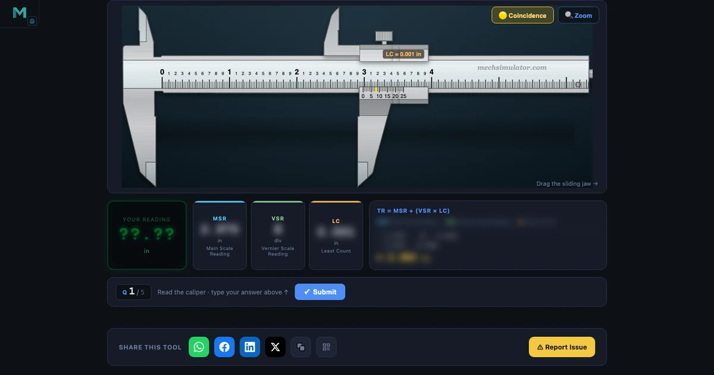
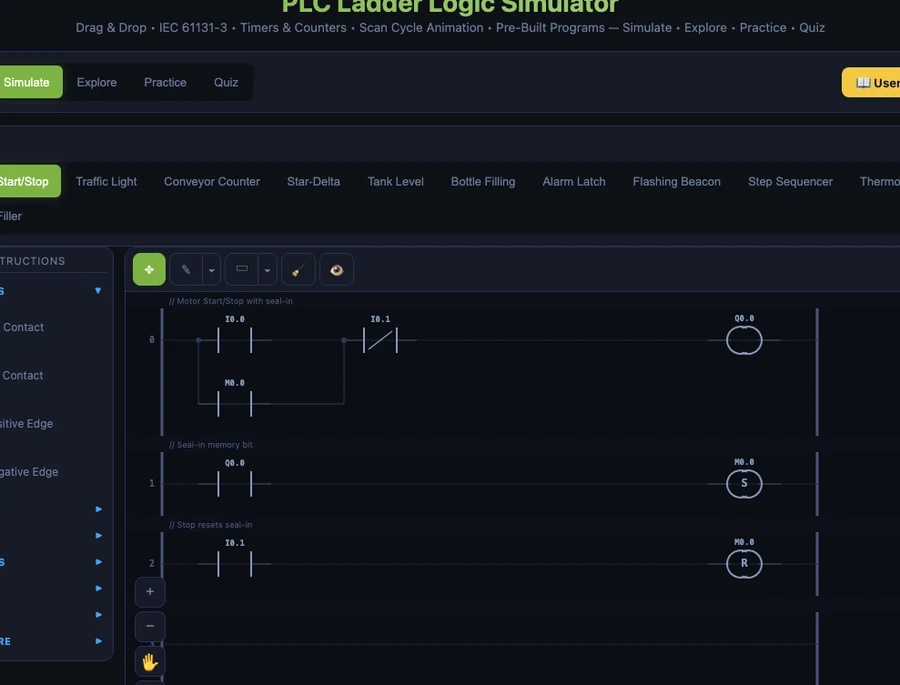

Free Online Engineering Lab Simulators for CTE Students — No Software Needed

- NHIT VisualLab offers 20+ free, browser-based engineering lab simulators — no account, no download — covering precision measurement, CNC G-code, PLC ladder logic, hydraulics, and pneumatics.
- The slide caliper and micrometer simulators include Imperial mode at 0.001-inch precision, matching the NIMS Measurement, Materials & Safety practical assessment format exactly.
- Every tool runs as a static HTML5 Canvas page on any Chromebook or school device without admin permissions, and embeds into Google Classroom, Canvas, or Schoology as a link.
Lab time is the scarcest resource in any CTE program. In a class of 24 students, sharing six vernier calipers means each student gets roughly four minutes of hands-on instrument time per session — not nearly enough to build reading fluency before the NIMS practical. Physical PLC trainers cost several thousand dollars. CNC machines need scheduled spindle time, safety supervision, and scrap material to burn through when students make mistakes. Free online engineering lab simulators don't replace the real thing, but they remove every barrier between a student and deliberate practice.
NHIT VisualLab has 20+ browser-based tools covering precision measurement, CNC machining, PLC programming, fluid power, and engineering physics. All free. No account, no installation required. This guide walks through the most relevant ones for US CTE, NIMS, and NCCER programs, organised by the credential or course module they support.
Why the Lab Equipment Problem Is Worse Than It Looks
Here's a scenario that plays out every semester. A CTE instructor walks into the first precision measurement lab of the year. The students have already watched a video on reading a slide caliper. They've seen the formula: TR = MSR + (VSR × LC). They nod. They seem ready.
Then the instructor hands out the calipers, gives a practice reading to take, and half the class goes quiet. Not because the concept is hard — because there's a significant difference between understanding a formula in the abstract and applying it under time pressure while holding an unfamiliar instrument that costs $40 to replace if dropped. The hesitation is physical, not intellectual.
What those students need is low-stakes repetition before they touch the real instrument. Twenty readings where they can be wrong, check their work immediately, and try again without anxiety. That's the gap a virtual lab fills. The simulator builds the visual pattern recognition; the physical lab session reinforces it with tactile reality. Both are necessary. The simulator just makes the physical session far more productive.
Precision Measurement — NIMS Measurement, Materials & Safety
The NIMS Measurement, Materials and Safety credential is the gateway credential in virtually every US CTE machining pathway. Students must demonstrate accurate readings with a steel rule, slide caliper, and outside micrometer — all in inch-system units, under timed conditions.
Slide Caliper (Vernier Caliper) Simulator
The Vernier Caliper Simulator covers 0.02 mm, 0.05 mm, and 0.1 mm least count in metric, plus a full Imperial mode replicating a 6″ slide caliper at 0.001″ precision — the standard used in NIMS assessments. Drag the jaw to any position; the MSR, VSR, LC, and total reading update in real time with the full formula breakdown visible. Switch to Quiz mode for five randomised readings with scoring. Students who complete three or four rounds of Quiz mode before their first physical lab session arrive with genuine pattern recognition, not just theoretical knowledge of the formula.
Outside Micrometer Simulator
The Micrometer Screw Gauge Simulator — called the outside mic in US machine shops — covers the 0–1″ range in 0.001″ increments. The half-thou mark is the leading cause of micrometer errors among students everywhere. The simulator highlights it explicitly in Explore mode, names it, explains why it exists, and shows how to identify it reliably. Practice mode generates randomised readings with instant feedback. Try this specific scenario: set the thimble just past a half-thou mark and check the reading — that's exactly the case that trips students up on the NIMS practical, and it's the case they need to practise most.
Supporting Measurement Tools
The measuring category also covers the Steel Ruler (1/64″ graduation reading), Dial Gauge (0.001″ pointer reading), and Bevel Protractor (5-minute angle measurement). Together they cover every instrument in the NIMS Measurement, Materials and Safety practical. The companion article Why Measuring Instrument Simulators Belong in Every Engineering Classroom gives a full walkthrough of all eight tools with a tested lesson structure.
CNC Machining — NIMS CNC Turning and Milling
CNC access is the toughest bottleneck in any machining program. You might have two or three machines, a full class, and a spindle-hours budget that runs out by November. A browser-based CNC simulator doesn't cut metal — but it lets students write programs, catch errors, and verify tool paths before they ever touch the control pendant. That means less scrap, fewer stops, and more confident students on the machine.
CNC G-Code Simulator
The CNC G-Code Simulator accepts Fanuc-compatible G-code typed directly in the browser and animates a colour-coded tool path in real time. It supports G00 (rapid), G01 (linear feed), G02/G03 (arcs), G20/G21 (inch/metric), G90/G91 (absolute/incremental), and the most common M-codes. Fanuc-compatible syntax is what Haas CNC uses — the most common machine brand in US CTE shops — so programs that work here transfer directly to the school's physical machines. NIMS CNC Turning Level 1 and CNC Milling Level 1 both require writing simple programs from scratch; unlimited safe practice removes the anxiety of editing code on a live machine. Full walkthrough: CNC G-Code Simulator Online — Learn G-Code Free.
Machining Calculator
The Machining Calculator computes RPM, feed rate, MRR, and cutting power for turning, milling, and drilling. A dedicated US Machining section expresses cutting speed in SFM (Surface Feet per Minute) — the convention used in every American machine shop — alongside the metric m/min formula. US RPM formula: N = (SFM × 3.82) / D(inches). NIMS Turning Operations Between Centers requires students to calculate speeds and feeds from SFM values given in the job packet; this calculator handles every step and shows the formula so students understand what they're computing rather than just punching numbers.
Industrial Automation — PLC Ladder Logic and Fluid Power

PLC Ladder Logic Simulator
The PLC Ladder Logic Simulator supports drag-and-drop rung building with 22 IEC 61131-3 instruction types: Normally Open and Normally Closed contacts, output coils, set/reset latches, TON/TOF/TP timers, CTU/CTD counters, positive/negative edge detection, compare blocks, and math instructions. Pre-built presets include Motor Start/Stop, Traffic Light, Conveyor Counter, Star-Delta, Tank Level, Bottle Filling, and Step Sequencer — ten industry-representative programs, each with commented rungs explaining the control logic.
For US programs using Allen-Bradley (Rockwell Automation) equipment: IEC naming maps directly. XIC = NO contact, XIO = NC contact, OTE = output coil, OTL = set latch, OTU = reset latch. The TON timer block in this simulator is structurally identical to the TON instruction in Studio 5000 Logix Designer. A student who masters the Motor Start/Stop preset here will recognise the same rung structure the first time they open a real Allen-Bradley program. NIMS Industrial Technology Maintenance — Electrical Systems and NCCER Industrial Instrumentation Level 2 both list PLC ladder logic as a core module.
Hydraulic and Pneumatic Circuit Simulators
The Hydraulic Circuit Simulator and Pneumatic Circuit Simulator are drag-and-drop circuit builders using ISO 1219 symbols — the same symbols in Parker, Bosch Rexroth, and Festo engineering documentation. Build a circuit, hit Simulate, watch actuator motion and flow direction animate in real time. The Electro-Pneumatic Circuit Simulator extends this to circuits that combine PLC solenoid outputs with pneumatic actuation — the most common automation arrangement in US light manufacturing. NCCER Pipefitting Level 2, Millwright Level 3, and Industrial Instrumentation Level 1 all include fluid power as a core topic. See Free Hydraulic & Pneumatic Circuit Simulator — FluidSIM Alternative for a full walkthrough.
Physics and STEM Lab Simulations
Beyond machining and automation, NHIT VisualLab covers topics from AP Physics, dual-enrollment engineering, and STEM electives. The Four-Stroke Engine Simulator animates intake, compression, power, and exhaust with valve timing and combustion markers — directly relevant for automotive CTE (NATEF/ASE pathways). The Logic Gate Simulator covers AND, OR, NOT, NAND, NOR, and XOR with live truth table output, a clean match for electronics CTE and dual-enrollment computer science. The Stress-Strain Simulator plots material testing curves for multiple materials, supporting manufacturing processes and engineering materials coursework. The Projectile Motion Simulator lets students vary launch angle and initial velocity while range, max height, and time of flight update in real time — useful for AP Physics and dual-enrollment introductory mechanics.
How to Integrate These Into a CTE Lesson
Pre-lab homework (15 minutes). Assign three rounds of Practice mode in the relevant simulator before the physical lab session. Students arrive having already made 30+ virtual readings. The physical session reinforces skill rather than introducing it. The score change from the first round to the third round is also a useful data point — if a student is still at 2 out of 5 after three rounds, they need targeted intervention before the physical assessment, and you know that before the session instead of during it.
Projection teaching. Open Explore mode on a projector or smart board. Explore mode labels every instrument component and walks through the reading method step by step with highlighted callouts. It functions as an interactive visual that responds to the exact question a student just raised, rather than a static slide that doesn't move when you point at it. You can drag to a specific reading, freeze it, and discuss it — all without touching a physical instrument.
Assessment preparation. Quiz mode generates five randomised questions in the same timed, scored format as NIMS practicals. Students can self-assess in the days before a credentialing exam without needing instructor supervision or lab scheduling. The star rating gives immediate, unambiguous feedback: three stars is passing territory; two stars means more practice needed.
Distance and hybrid delivery. Everything runs in a browser with no software, so these tools embed into Canvas, Schoology, and Google Classroom as clickable links. A remote student has the same virtual lab as an in-person student. That's not a minor convenience — for equity across hybrid programs, it's essential.
Try It Yourself
All tools below are free — no account, no download, works on any device.
Key Takeaways
- NHIT VisualLab provides 20+ free, browser-based engineering lab simulators — no download, no signup, runs on Chromebooks and school-issued devices without admin permissions.
- The slide caliper and micrometer simulators both include Imperial (inch) mode at 0.001″ precision, matching the NIMS Measurement, Materials and Safety practical assessment format exactly.
- The PLC Ladder Logic Simulator uses IEC 61131-3 naming that maps directly to Allen-Bradley: XIC = NO contact, XIO = NC contact, OTE = output coil, and TON timer logic is identical to Studio 5000.
- The CNC G-Code Simulator uses Fanuc-compatible syntax — the same control language used by Haas CNC machines common in US CTE programs.
- Hydraulic and pneumatic simulators use ISO 1219 symbols matching Parker, Bosch Rexroth, and Festo documentation — directly relevant to NCCER Pipefitting, Millwright, and Instrumentation programs.
- All simulators follow a Free / Practice / Quiz progression: explore without pressure, solve randomised problems, then assess under timed conditions — the same sequence as actual credentialing.
Frequently Asked Questions
Are these engineering lab simulators really free?
Yes. All simulators on NHIT VisualLab are 100% free, browser-based, and require no account or software installation. They run on any device with a modern browser — Chromebook, Windows PC, Mac, tablet, or phone.
Which NIMS credentials do these simulators support?
The slide caliper simulator and micrometer simulator both support the NIMS Measurement, Materials and Safety credential — both include Imperial mode with 0.001-inch precision. The CNC G-Code simulator supports NIMS CNC Turning and CNC Milling credentials. The machining calculator covers speeds-and-feeds requirements for NIMS Turning Operations Between Centers. The PLC simulator supports NIMS Industrial Technology Maintenance — Electrical Systems.
Can these simulators run on a school Chromebook?
Yes. Every simulator on NHIT VisualLab is a static web page using only HTML5 Canvas and vanilla JavaScript — no plugins, no Flash, no downloads. They run in any Chromebook browser without administrator permissions, and they work inside Google Classroom as embedded links.
Do the measurement simulators support inch units for US students?
Yes. The vernier caliper (slide caliper) and micrometer simulators both include a full SI / Imperial toggle. Imperial mode replicates a 0.001-inch slide caliper and a 0.001-inch outside micrometer — the exact instruments and precision levels used in NIMS practical assessments.
Is the PLC simulator compatible with Allen-Bradley programming?
The PLC Ladder Logic Simulator teaches IEC 61131-3 ladder logic, which is the foundation of all Allen-Bradley (Rockwell Automation) programming. Allen-Bradley's XIC instruction is a Normally Open contact, XIO is Normally Closed, and OTE is the standard output coil — the same as in this simulator. Students who master this tool can open Studio 5000 Logix Designer or Connected Components Workbench (CCW) and recognise every instruction immediately.
The best use of lab equipment time is practice that counts — not introduction. Every minute a student spends on a physical instrument should be confirmation of skill they've already built, not the first time they've tried to find a coincidence line or decode a ladder rung. A free virtual lab makes that possible for every student in your program, regardless of what your equipment budget allows.
Start with the Vernier Caliper Simulator — switch it to Imperial, run five Quiz rounds, and see what your students' first contact with measurement skill looks like before they ever pick up a real caliper.